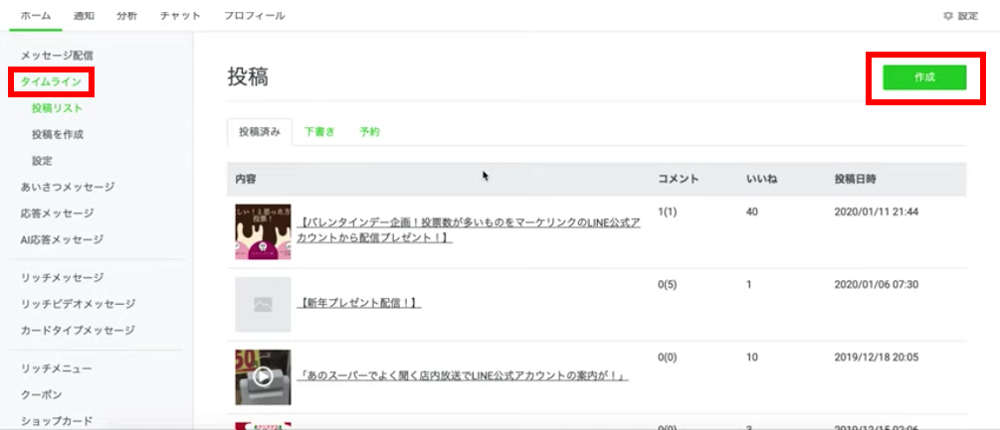
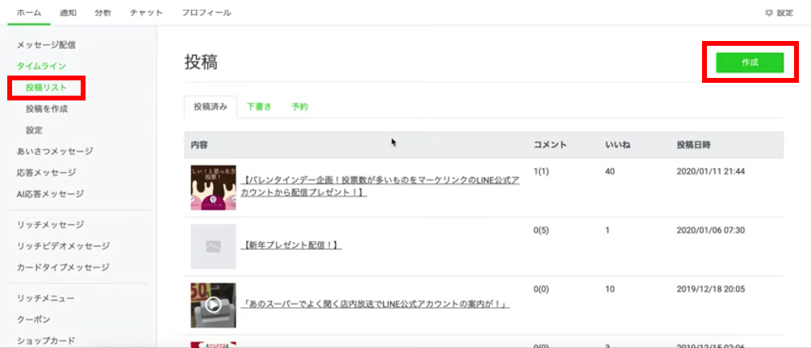
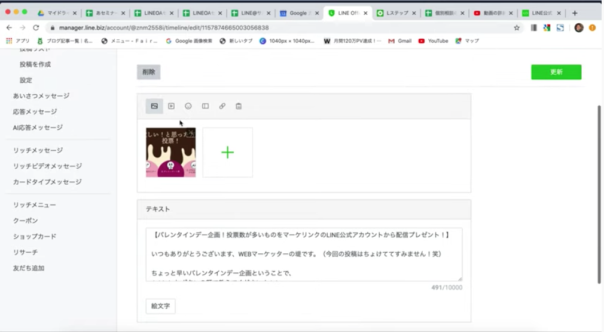
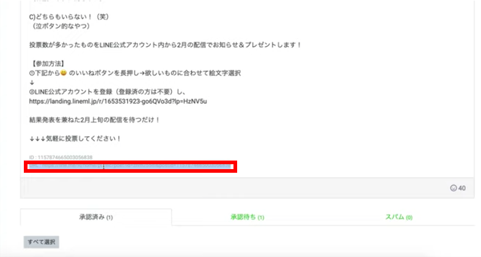

#018 タイムライン投稿の方法

こんにちは！matsumotoです。今日は、自分のLINE公式アカウントのタイムラインに投稿する方法を解説します！普段からLINEをお使いの方なら普通にできるかもしれませんが、このブログではLINE公式アカウントをお使いの皆さまのタイムライン投稿として、効果的な投稿方法を解説しますので、ぜひ参考にしてください。
（１）「タイムライン投稿」はどこに表示される？
タイムラインは、自分のアカウントのタイムライン上に表示されます。Facebookの投稿のようなイメージを浮かべていただければ、わかりやすいかもしれません。ご自分のアカウントのプロフィール（ホーム）ページの「投稿」ボタンや、トークルーム右上の投稿ボタンから確認することができます。
投稿すると、友だちに「◯◯さんが久しぶりにタイムラインに投稿しました」など通知がいきます（友だちの通知設定によっては、通知されないこともあります）。タイムライン投稿には、友だちが気軽にイイね！をつけたり、コメントをつけることができ、さらに友だちが自分の友だちに投稿をシェアすることもできます。友だちがイイね！をつけると、友だちのトークルームにあなたのタイムライン投稿が表示されます！ 直接あなたと友だちになっていない、「友だちの友だち」にも投稿を見てもらえるので、実はすごく宣伝効果（リーチ力）の高いツールです。
投稿内容は、個人的な近況報告などブログ的なものでも良いですし、ダイレクトにご自分のビジネスの宣伝やキャンペーン告知をするのも良いです。リッチメニュー やリッチメッセージ、カードタイプメッセージ、クーポンなど、他の機能で発信する内容と分けて整理し、相互に関連づけることができるような投稿をこころがけましょう。ここで友だちからイイね！をもらうことが重要ですので、ご留意ください。
（２）LINE Official Accountからログイン

それでは、具体的な作業の進め方を解説します。おなじみ「LINE Official Account Manager」にログインしてください。ホーム画面にログインしたら、左側メニューバーから「タイムライン」をクリックしてください。

ちなみに、LINE公式公式アカウントは友だちに1,000通メッセージ配信するまでは無料で使えます。それ以上の数になると有料化しますが、この「タイムライン投稿」については何通投稿しても無料です！ 友だちに迷惑がられない範囲内で（こいつのLINEウザい！となると、ブロックされてしまいます）、マメに投稿して存在をアピールしましょう。
（３）投稿内容を作成する

まずは、右上の「作成」ボタンをクリックしてください。新規作成画面が表示されますので、まずは今すぐ投稿するのか、そうではなく日時を指定して予約投稿するのかを選びます。
タイムラインに投稿できる内容は、写真・動画・顔文字・クーポン・URL・リサーチの６種類。写真を投稿する場合は、一番左の写真のアイコンをクリックして、下の「写真をアップロード」をクリックし、PC内の写真を選択するか、このボックス内に写真ファイルをドラッグしてアップロードします。基本的に写真や動画は横長サイズで表示され、写真なら10MBまで、動画なら500MB（20分以下）という制限があります。
（４）タイムライン投稿を広く拡散させるコツ！

続いて、画面を下にスクロールし、テキストボックスにテキストを入力します。上の画像は入力例です。（画像が正方形で表示されていますが、投稿される時は横長表示になります）
実際に投稿すると、このテキストの下にイイね！ボタンが表示されますので、文末に「↓↓↓イイね！おしてね♪」とか、「お気軽にコメントしてくださいね！」など、イイね！を押してもらえるような一文を入れたり、友だちがコメントしたくなるようなないようにする（アンケート形式にする、クイズ形式にする、など）と大変効果的です！！ 友だちがそれに乗って来てくれると、自分の知らない人にまで広く自分のタイムライン投稿が拡散されていきます。知らない人でも友だち追加してもらえるよう、ご自分のLINE公式アカウントのURLを記載することもお忘れなく！（ご自分のブログやHPを持っている方は、そちらも記載ください）
（５）さらに、メッセージ配信とひも付けする
タイムライン投稿をすると、自動的にその投稿のURLが生成されます（投稿後に、ご自分のLINE Official Account Managerからご確認ください）。このURLをコピーし、各種メッセージ配信の文末にそれをペースト（貼り付け）して自分のタイムライン投稿を宣伝することができます！これでタイムライン投稿の宣伝力が倍増するので、ぜひトライしてみてくださいね！

それでは、本日の解説は以上になります。また来週！！
まずはLINE公式アカウントを開設しましょう！
●LINE公式アカウントの開設方法はこちら
●LINE公式アカウントをオススメする理由はこち
●LINE公式アカウントでできることはこちら
●Lステップでできることはこちら